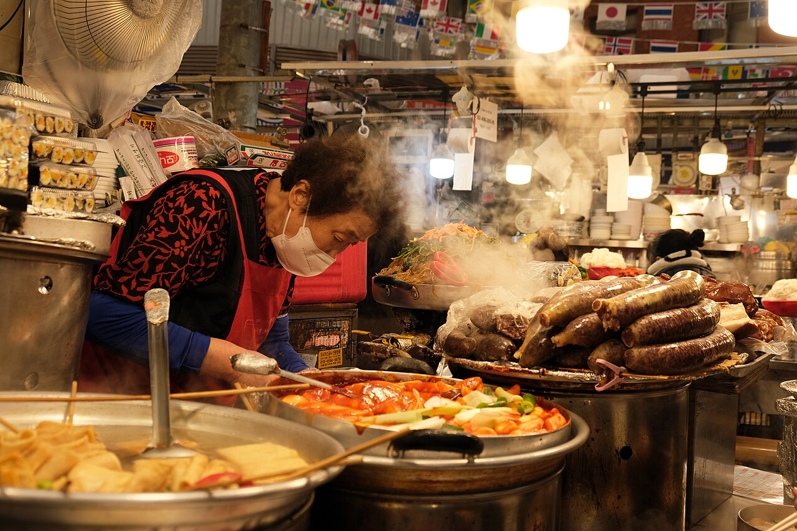
Experience 01
Markets & Street Food
Fast, social and full of contrast. Compare a famous visitor-friendly market with a neighborhood market and a vast shopping market before choosing your market day.
Korean food travel is not a checklist of famous dishes. Start by deciding how you want to eat: at a busy market counter, around a barbecue table late at night, inside a design-led café, or in a city known for its regional food. That choice affects which city deserves your time, which neighborhood fits your pace, and whether staying nearby will actually improve the trip.
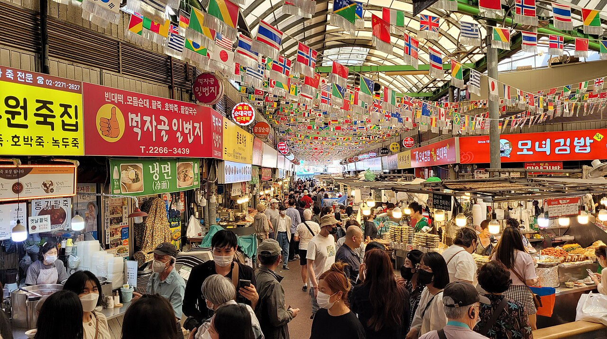
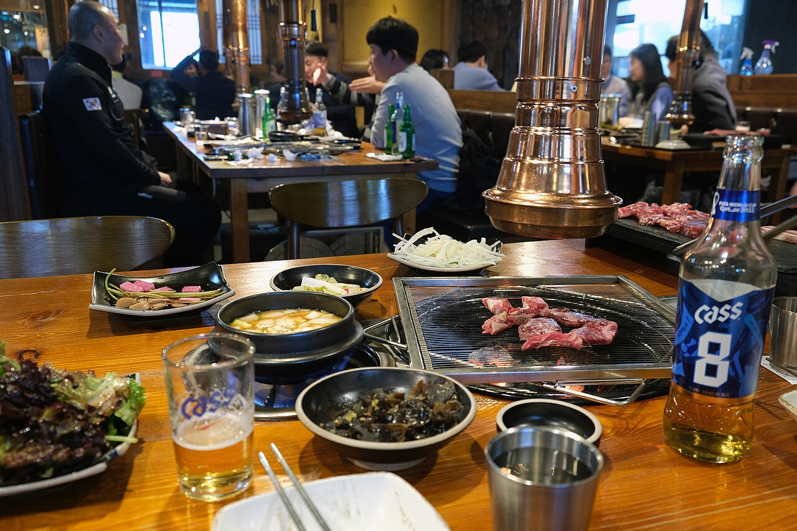
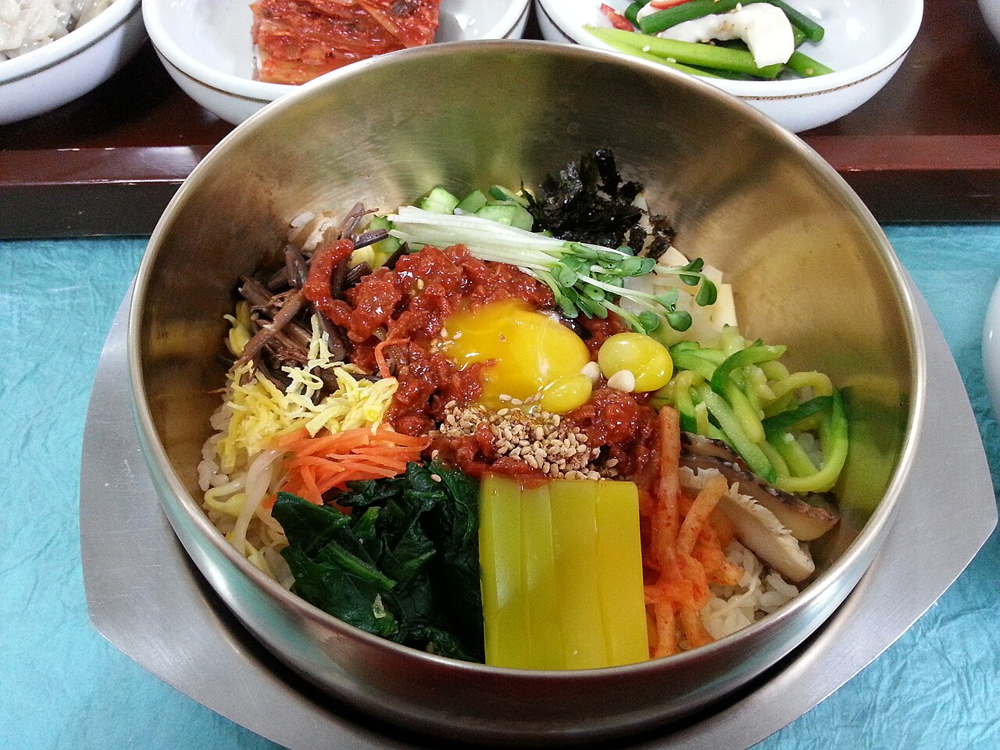
Do you want a fast market visit, a long barbecue dinner, a café-focused afternoon, a regional meal or a hands-on class? The setting matters as much as the dish.
Seoul offers the widest range. Busan brings food closer to the port and sea. Jeonju connects regional food with traditional culture. Jeju works best inside a wider island route.
You do not need to stay beside every restaurant or market. Choose a food neighborhood as your base only when it improves several parts of the trip—not just one meal.
Food is not one category. The right destination changes depending on whether you want a busy market, a late-night table, a slow café day or a regional specialty.

Fast, social and full of contrast. Compare a famous visitor-friendly market with a neighborhood market and a vast shopping market before choosing your market day.
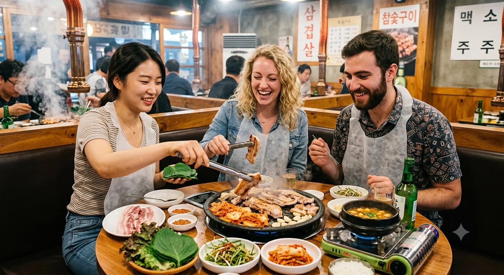
More than grilled meat. Korean barbecue is a shared evening built around the table, side dishes, conversation and the neighborhood you choose after dark.
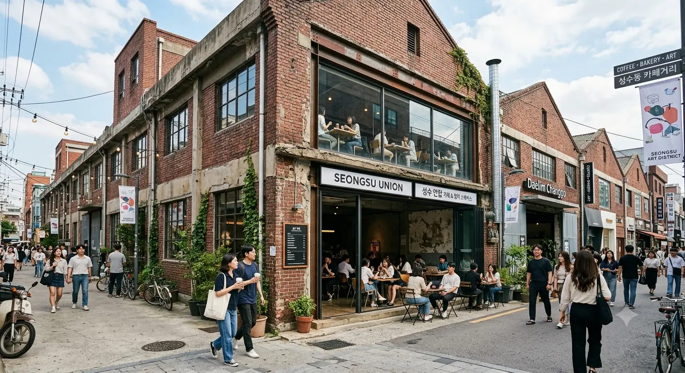
Coffee is only part of the experience. Seoul’s café districts combine design, desserts, shopping, converted buildings and the character of the surrounding streets.

Regional food is most meaningful when it explains a place. Look beyond one famous dish and consider the market, dining style, history and pace of the city around it.
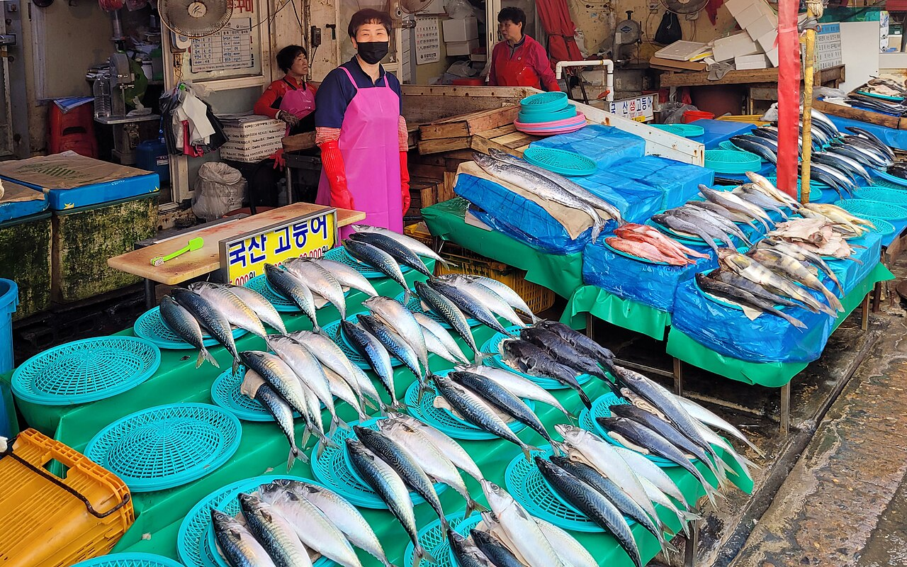
The coast changes more than the menu. Markets, harbors, local ingredients and travel distance all shape whether seafood becomes one meal or the reason to add another city.
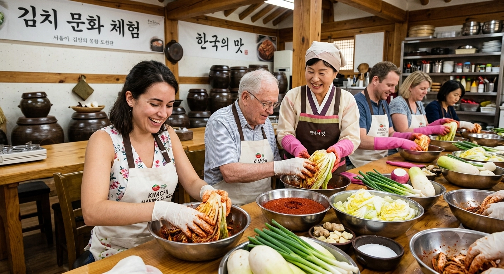
When ordering is not enough, learn the ingredients, make the dish or explore a market with someone who can explain what you are seeing.
Do you want to taste many things quickly, spend a whole evening around food, or build part of your route around one region?
Seoul’s traditional markets are not interchangeable. Gwangjang Market is the clearest first-market experience for many visitors: busy food stalls sit beside textiles, groceries and traditional goods in one of Korea’s best-known permanent markets. Come for concentrated energy, familiar market dishes and the experience of eating close to the people preparing the food.
Mangwon Market is smaller and more closely tied to its surrounding neighborhood. It works well as part of a slower local day that also includes nearby streets or a Hangang picnic. Namdaemun Market is much broader: its food alleys form only one part of a vast shopping district selling clothing, kitchenware, accessories and everyday goods.
First-time visitors, travelers who want to sample several foods, and anyone combining a market with nearby walking, shopping or cultural sights.
Popular meal times can mean crowded aisles, limited seating and queues. Opening hours, payment methods and menu availability differ by stall.
Usually not for the market alone. Jongno becomes a stronger base when the market is part of a wider palace, Dongdaemun or Euljiro plan.
Decision: Choose Gwangjang for the concentrated first experience, Mangwon for neighborhood life, and Namdaemun when food and shopping belong to the same day.
A Korean barbecue restaurant is not simply a place where meat arrives already cooked. At many gogi-jip, meat is grilled at the table and eaten with vegetables, sauces, side dishes, stews or noodles. Some restaurants leave the grilling to diners, while others have staff cook the meat and indicate when it is ready. The pace is social and usually slower than a quick meal.
The neighborhood changes the night. Mapo suits travelers looking for barbecue and a more everyday evening atmosphere. Hongdae adds bars, younger crowds and late-night activity. Euljiro pairs older restaurants with narrow alleys and a textured central-Seoul night. Gangnam offers more polished or premium options, often with higher prices or stronger reservation expectations.
Couples, friends, families and travelers who see dinner as a major part of the evening rather than a short stop.
Minimum orders and solo-dining policies vary. Popular restaurants may involve long waits, and a late finish can create a transport issue.
Worth considering when late-night dining is central. One reservation does not justify changing hotels; several evenings in the same area might.
A café-focused day in Seoul can feel completely different depending on the area. Seongsu combines large cafés, former industrial buildings, select shops, pop-ups and brand spaces. Yeonnam feels more residential and walkable, with smaller cafés and casual restaurants that connect naturally to Hongdae. Ikseon-dong places cafés and restaurants inside or around renovated hanok buildings, giving the day a stronger historic visual identity.
Travelers interested in design, desserts, photography, fashion, beauty and spending several hours inside one neighborhood.
Weekend queues can be long. Social-media images rarely show the true size, noise level or crowding of a venue.
Only when cafés, brands and shopping are repeated priorities. One afternoon in Seongsu does not require a Seongsu hotel.
Traditional food can mean a formal multi-course meal, a simple market breakfast, a local soup, a regional specialty, temple food or a dish served in a historic neighborhood. The strongest regional experiences do not merely collect famous names. They help explain why a dish developed in a place, how local people eat it and what else the traveler can experience nearby.
Jeonju is the clearest example for many first-time visitors. Its identity connects bibimbap and other regional foods with traditional markets and Hanok Village. In Seoul, Jongno, Insa-dong and the palace districts can provide traditional tea, hanok dining, market food and formal Korean meals without requiring another city.
Travelers interested in history, regional identity, traditional culture and slower meals with more context than a restaurant list provides.
A restaurant using “traditional” or “authentic” is not automatically better. Tourist districts vary widely in price, quality and atmosphere.
Optional in Seoul; more valuable in a regional city. Jeonju becomes more convincing when the evening and morning are included.
Busan and Jeju offer two very different coastal food trips. In Busan, Jagalchi Market places seafood, vendors, harbor activity and Nampo-dong in one concentrated area. It works for travelers who want the market itself to be part of the experience.
In Jeju, food is more dispersed. Black pork, seafood and island dishes appear across Jeju City, Seogwipo and smaller coastal areas, so the day’s driving route and accommodation location matter. Busan can deliver an urban port-and-market experience; Jeju works when food is integrated into a nature, coast and road-trip itinerary.
Travelers who want the coast, market or island landscape to be part of the meal rather than background scenery.
Seafood pricing can depend on species, weight, season and preparation. Confirm the total price and serving method before ordering.
Yes at the city or island level. In Jeju especially, the overall route matters more than one restaurant.
Guided food experiences generally fall into three categories. A market walk helps travelers understand ingredients, vendors and ordering before eating. A cooking class focuses on preparing dishes and learning techniques. A small-group food tour trades hands-on cooking for the chance to taste several places and hear the cultural context behind them.
Solo travelers, first-time visitors, families and anyone who wants more context than an unguided meal provides.
Check language, duration, group size, cancellation policy and walking distance. Confirm dietary restrictions before payment.
Usually no. Location matters mainly when a class starts early, ends late or connects to several activities in the same area.
Do not add a city because one dish is famous. Compare variety, neighborhood density, travel time and whether food fits the rest of the trip.
Seoul’s advantage is not one defining dish. It is the range of experiences that can be combined inside one city: traditional markets, Korean barbecue, trend-led cafés, regional restaurants, modern dining and late-night food.
That variety also creates a planning problem. Jongno, Seongsu and Mapo are not one compact food district. Trying to cross the city for every famous stop can turn a food day into a transport day. In Seoul, choosing the right neighborhood matters more than collecting the longest restaurant list.
First-time visitors and travelers combining food with shopping, beauty, culture and nightlife.
Popular areas are far apart. Build each day around one or two connected neighborhoods.
Sometimes. The value rises when late nights or repeated visits concentrate in one area.
Decision: Choose Seoul for the widest range, then reduce travel time by choosing a base that matches the experiences you will repeat.
Busan brings food closer to the port, the sea and the rhythm of a coastal city. A strong trip can combine seafood markets, local soups, noodles, beach districts, cafés and evening views rather than treating seafood as one isolated meal.
The main districts offer different versions of Busan. Nampo works best for markets and port atmosphere. Haeundae and Gwangalli connect food with beaches and evening walks. Seomyeon offers central transport and late dining, but less of the coast.
Travelers who want seafood, markets, coastal evenings and a city that feels clearly different from Seoul.
Busan is spread out. Crossing between market and beach districts every day can consume valuable time.
Yes, within the city. A one- or two-night base makes more sense than a rushed food-only day trip.
Decision: Choose Busan when the coast changes the whole itinerary—not simply because seafood is on the menu.
Jeonju is not a smaller version of Seoul. Its appeal comes from concentrating regional food, hanok streets, markets, traditional drinks and a slower urban pace into a more focused trip.
Bibimbap may be the best-known name, but it should not be the only reason to go. Jeonju becomes more convincing when food, architecture, craft and evening atmosphere support one another. It is a destination for travelers who value regional identity more than nightlife or endless choice.
Travelers combining traditional culture, regional food and a slower break from the largest cities.
Hanok Village is visitor-heavy. A famous dish name does not guarantee a distinctive restaurant experience.
Often worth it. Evening and morning add more value than compressing the city into a rushed return trip.
Decision: Choose Jeonju when regional identity and traditional atmosphere matter more than the number of available options.
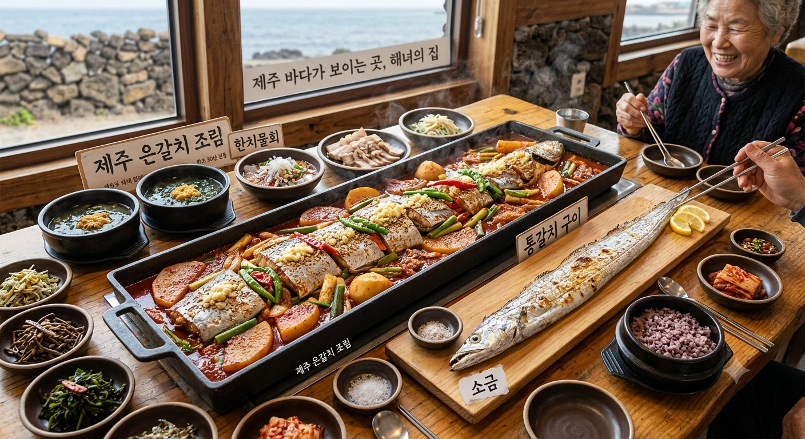
Jeju’s food works best inside a larger island plan. Black pork, seafood, local soups, markets and cafés are spread across Jeju City, Seogwipo and coastal districts rather than concentrated into one simple food neighborhood.
This makes route planning more important than restaurant ranking. A highly rated stop can still be a poor choice if it adds a long detour, parking stress or unnecessary backtracking. Choose the accommodation area and daily driving route first, then fit food into the geography.
Travelers combining nature, driving, seafood, cafés and island ingredients over several days.
Food stops can be far apart. Queues, parking and limited public transport can reshape the day.
Choose by route, not one restaurant. Accommodation geography matters more than a single famous meal.
Decision: Choose Jeju when food supports a nature-led island itinerary—not when food is the only reason to add the island.
The question is not which area has the most restaurants. It is which area matches the food, evening rhythm and other activities you will repeat.
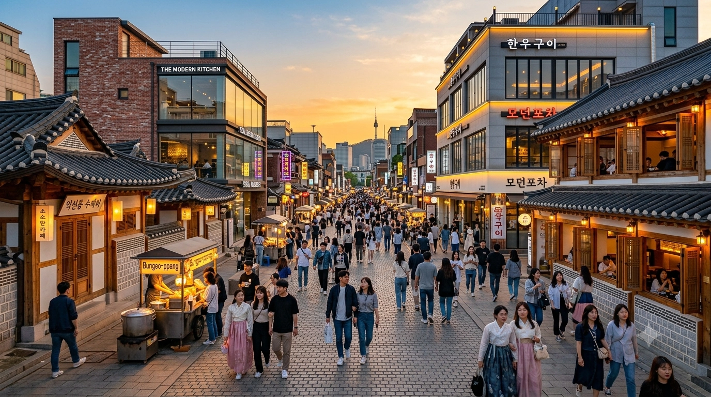
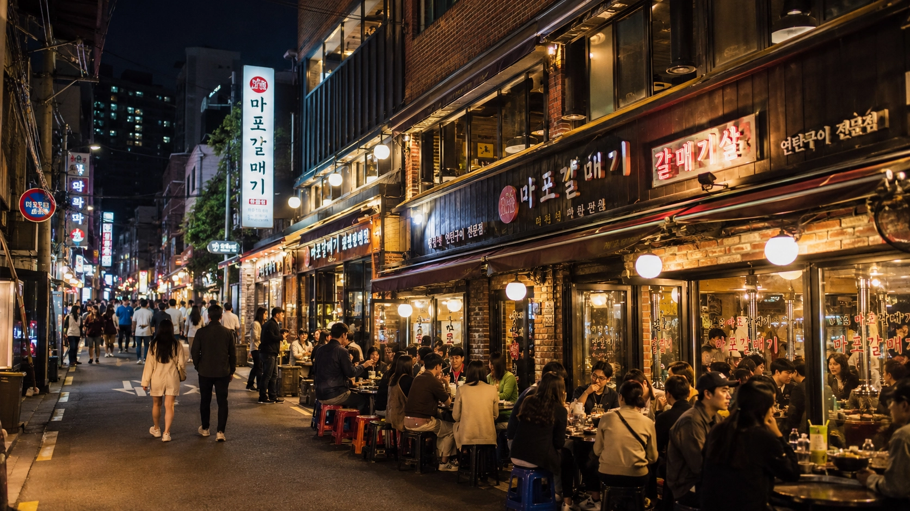
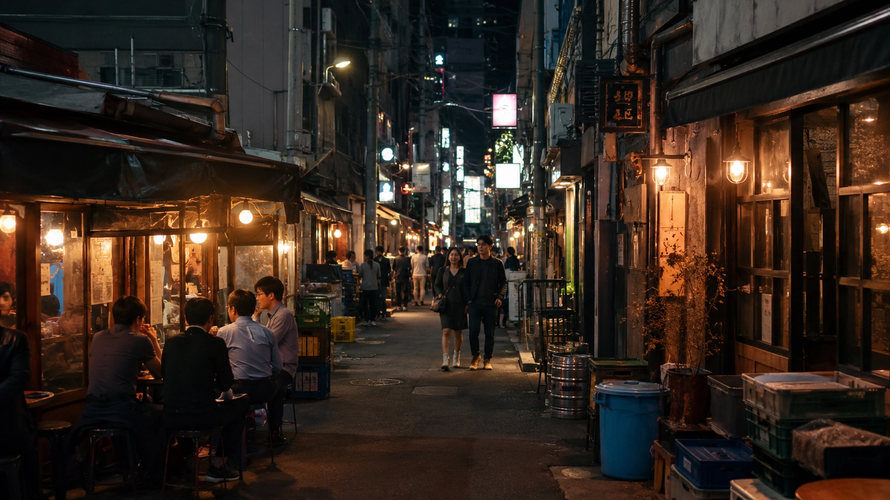
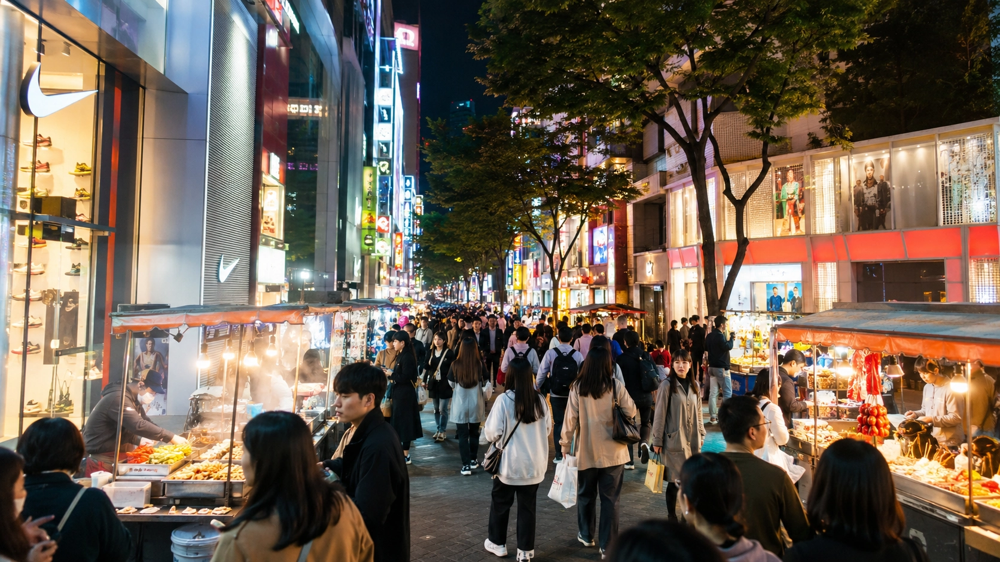
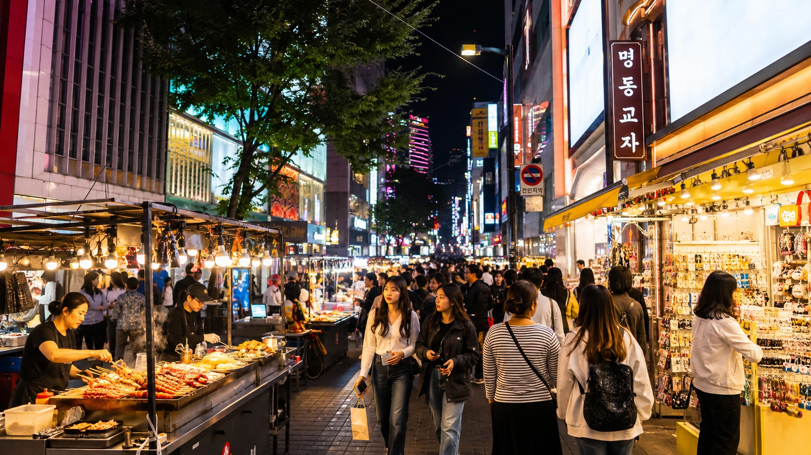
Traditional markets, Korean meals and historic Seoul in one central base.
Barbecue, local evening dining and practical western-Seoul transport.
Cafés, casual dining and the strongest late-night energy.
Old restaurants, narrow alleys and a layered central-Seoul night.
Trend-led cafés, brand spaces and design-focused daytime wandering.
First-trip convenience, shopping and easy access to several food districts.
Markets, traditional food and historic Seoul in one walkable base.
Jongno connects Gwangjang Market, Insa-dong, Ikseon-dong, palace areas and older dining streets. It suits travelers who want food and historic sightseeing to belong to the same day rather than crossing the city between unrelated stops.
The area is broad, so the exact hotel location still matters. Gwangjang and Ikseon-dong can feel highly visitor-oriented, while quieter side streets may offer a different pace.
Decision: Choose Jongno when markets, traditional food and historic Seoul should share one base.
Barbecue and everyday evening dining matter more than sightseeing density.
Mapo, Gongdeok and nearby residential-business districts offer a more everyday evening food atmosphere. The strongest reason to stay is not a long attraction list; it is convenient access to barbecue, local restaurants and transport links without Hongdae’s constant intensity.
Daytime sightseeing is less concentrated than in Jongno or Myeongdong, so Mapo works best when dinner and practical transport are genuine priorities.
Decision: Choose Mapo when dinner quality and practical evenings matter more than shopping or landmark density.
The easiest mix of cafés, casual food and late-night activity.
Hongdae is energetic and nightlife-led; Yeonnam adds smaller cafés, restaurants and neighborhood walking. Together they suit travelers who want a food day to continue naturally into drinks, music or a late return to the hotel.
The same energy creates crowd and noise issues. A hotel directly on the busiest streets may be less comfortable than one on the quieter edge of the district.
Decision: Choose Hongdae and Yeonnam for the strongest combination of cafés, casual food and late-night freedom.
Old restaurants, bars and industrial alleys in central Seoul.
Euljiro layers older restaurants, printing and workshop streets, newer cafés and evening bars. It appeals to travelers who value urban texture and atmosphere rather than a polished, easy-to-read tourism district.
The lanes can be confusing, and the daytime mood differs sharply from the evening. Families and travelers seeking the simplest first-trip environment may prefer nearby Myeongdong or Jongno.
Decision: Choose Euljiro for layered central-Seoul nights and older restaurants—not for the easiest polished experience.
Cafés, brands and design spaces shape the day more than traditional food.
Seongsu is strongest when food is part of a trend-led day involving cafés, pop-ups, beauty, fashion and converted industrial spaces. It is a destination for the atmosphere around the meal as much as the meal itself.
Prices, queues and weekend congestion can be high. Travelers visiting for only one afternoon can reach Seongsu from another base without losing much.
Decision: Choose Seongsu when cafés, brands and trend spaces are a major reason for the trip.
The strongest first-trip base, but not Seoul’s clearest food identity.
Myeongdong’s advantage is convenience. Shopping, airport connections, central transport and access to Namdaemun, Euljiro and Jongno make it easy to reach several food districts without changing hotels.
The trade-off is a more visitor-oriented environment and a weaker local food identity than Mapo or Jongno. Choose it for the whole trip, not because it is the city’s single best food neighborhood.
Decision: Choose Myeongdong for easy first-trip logistics and access to multiple food areas.
| Area | Strongest food fit | Night energy | Traditional feel | Cafés & trends | Stay value |
|---|---|---|---|---|---|
| Jongno | Markets · traditional food · history | Medium | Very high | Medium | High |
| Mapo | BBQ · local evening dining | High | Medium | Low | Conditionally high |
| Hongdae & Yeonnam | Cafés · casual food · late nights | Very high | Low | High | Very high |
| Euljiro | Old restaurants · alleys · bars | High | Medium-high | Medium-high | High |
| Seongsu | Cafés · brands · desserts | Medium | Low | Very high | Conditional |
| Myeongdong | Convenience · shopping-day meals | Medium | Low | Medium | Very high |
Not always. A two-hour market visit should not control the whole hotel decision. Repeated late dinners, café days or a regional food trip can.
Late-night activity, repeated visits, several related experiences and difficult transport make a food-based location genuinely useful.
One market, one reservation or a stop that is easy by subway should not force the entire trip into the wrong neighborhood.
| Traveler type | Stay nearby? | Best base | Why |
|---|---|---|---|
| First trip to Korea | Choose convenience first | Myeongdong · Jongno | Central access matters more than one meal |
| Food is a main trip purpose | Often yes | Jongno · Mapo · regional city | Several meals and experiences can share one route |
| Cafés, beauty and shopping | Maybe | Seongsu · Hongdae | Useful when the neighborhood itself repeats across several days |
| Late-night BBQ and bars | Often yes | Mapo · Hongdae · Euljiro | Less late transport and more walkability |
| Traditional culture focus | High value | Jongno · Jeonju | Food, heritage and walking routes reinforce one another |
| Seafood and coast | Stay in the destination | Busan · Jeju | The city or island is part of the food experience |
| Family or parents | Logistics first | Myeongdong · Jongno | Transport, room comfort and easy meals outweigh nightlife |
| Solo traveler | Depends on activity | Jongno · Hongdae · Seongsu | Markets and cafés are easy; solo BBQ policies still vary |
| Very short itinerary | One central base | Myeongdong · Jongno · Hongdae | Concentrate the trip instead of chasing every district |
| Budget-first traveler | Compare total cost | Mangwon edge · Hongdae · central deals | Balance room price, transport cost and affordable food access |
The rule: You do not need to stay near every food destination. Choose your base only when it improves the whole trip—not just one meal.
Clear answers to the questions travelers often have before choosing a food experience, city or place to stay.
Start with one market experience and one shared sit-down meal. A traditional market gives you variety and energy, while Korean barbecue or a regional meal shows a different side of how people eat together. You do not need to try everything on your first trip.
Choose according to the experience you want. Seoul offers the widest range, Busan works well for seafood and port atmosphere, Jeonju connects regional food with traditional culture, and Jeju makes food part of a wider island itinerary.
Yes, when you want a busy and recognizable first-market experience. It may not be the best choice for every traveler. Mangwon suits a slower neighborhood day, while Namdaemun works better when shopping is also part of the plan.
Sometimes. Solo-dining and minimum-order policies vary by restaurant, so check before visiting. A set-menu restaurant, lunch visit, market meal or guided food experience may be easier when a barbecue restaurant is designed mainly for groups.
Stay in Jongno for markets and traditional culture, Mapo for barbecue-focused evenings, Hongdae or Yeonnam for cafés and late-night activity, and Myeongdong for first-trip convenience. Choose the area that improves the whole itinerary, not just one meal.
A day trip can cover the main sights and one or two meals. An overnight stay is more suitable when regional food, Hanok Village and a slower traditional atmosphere are central reasons for visiting.
They are useful when explanation, ingredients and ordering feel more important than complete independence. Choose a cooking class for hands-on learning, a market walk for local context, and a food tour when you want several tastings with less planning.
Yes. Recipes, sauces and preparation methods vary, so confirm allergies, vegetarian requirements and religious dietary needs before booking a class or ordering a meal. Do not assume that a dish is suitable based only on its name or appearance.
Compare Jongno, Mapo, Hongdae and Yeonnam, Euljiro, Seongsu and Myeongdong by food style, evening atmosphere, transport and overall trip fit. The best base is the one that supports several days—not the address closest to one famous restaurant.
Compare Seoul areas to stay →Operating hours, prices, menus and product availability may change. Check current information before visiting.
Photo credits: Gwangjang Market — Bgag, CC0 · Korean BBQ Seoul — Kallerna, CC BY-SA 4.0 · Jagalchi Market — Bernard Gagnon, CC0 · Bibimbap in Jeonju — Douglas Paul Perkins, CC BY 3.0 · Gwangjang vendor — Kallerna, CC BY-SA 4.0.